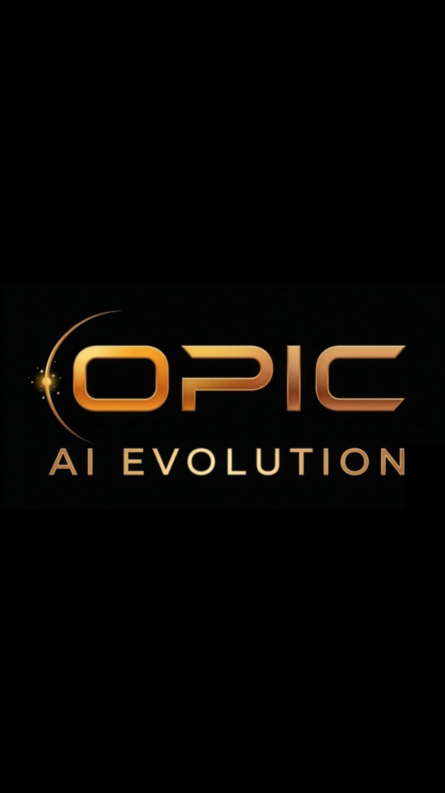

OPIC — Identità visiva per una nuova startup
Logo, varianti e direzione grafica per presentare una nuova realtà digitale con un'immagine ordinata e riconoscibile.
Il lavoro
OPIC è una proposta di identità visiva pensata per una nuova startup digitale legata al mondo dell'intelligenza artificiale. Il progetto richiedeva un segno chiaro, memorabile e abbastanza flessibile da funzionare in contesti diversi: presentazioni, documenti, profili digitali e materiali di lancio.
Francesca ha seguito il percorso creativo costruendo più proposte di logo e lavorando sulle varianti, sulla leggibilità del nome, sull'equilibrio tra tecnologia e accessibilità e su una direzione visiva coerente con il carattere innovativo del progetto.
- Studio del marchio e delle possibili direzioni visive.
- Proposte di logo con approcci diversi per forma, tono e impatto.
- Varianti pensate per uso digitale, documentale e presentazioni.
- Organizzazione dei materiali finali in cartelle chiare e pronte da condividere.
La proposta con orbita valorizza l'idea di movimento, connessione e centralità del dato. La versione minimale lavora invece su un segno più pulito, verticale e diretto, utile quando serve massima leggibilità.
Proposte caricate
Due direzioni visive per raccontare lo stesso nome con intensità e livelli di sintesi diversi.
